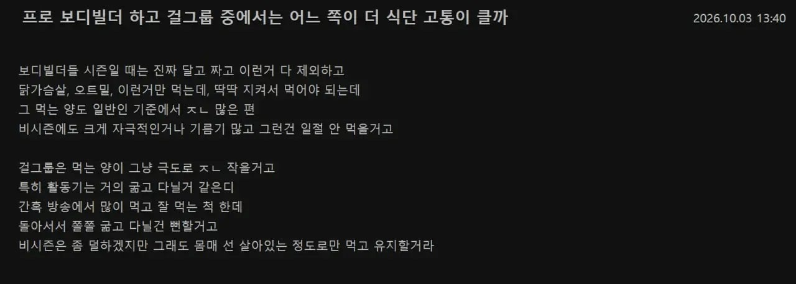

의외로 유저들 사이에서 논란중인 주제라고 함 ....

의외로 유저들 사이에서 논란중인 주제라고 함 ....

둘 다 제대로 겪어본 적은 없지만
ㅈㄴ 배고픈데 계속 활동해야하는게 조금더 힘들 것 같음..
활동 적게 해도 되면 굶는게 조금더 낫겠지만
개인적으론 굶는거보다 맛 없는거 억지로 먹는게 더 힘들어서 보디빌더 그리고 걸그룹식단은 이제 마운자로 딸깍으로 스무스해짐
걸그룹 요즘 다 마운자로 꼽고댕기는데 뭐ㅋㅋ
보디빌더는 좆같은걸 먹어야하잖아..
진짜 운동해본 사람만 알지 ㅋㅋㅋ 클린하게 먹는 고통이 훨씬 크다..
닭가슴살 고구마 단백질 쉐이크만 먹더만....
진성 헬창들은
역시 빛성환입니다
이건 너므 개인차가 크잖아
너무 범주가 큰데 10~100이랑 30~70이랑 비교하는느낌
이건 자로나오고부터 밸붕인듯
나는 차라리 체지방 줄인다고 덜 먹는게 쉽더라 반대로 벌크한다고 6~7끼 먹는건 진짜 고통이었음
걸그룹 아무리 살빼도 체지 5프로 미만, 데스페이스 나올정도는 아니니 프로빌더가 더 힘들지
1번 통풍올까봐 무섭다
정리하면 억지로 먹는것과 안먹으면서 많이 움직이는것의 대결인거같은데.
먹는 순간만 치면 전자가 더 고통스럽고, 삶 전체를 따지면 후자가 더 고통스러울거같음.
나한테 하라면 차라리 전자가 더 나은듯
ㅋㅋㅋ 븅신같이 쇠질만해서 뇌가 근육으로 가득찬애들이 많노 당장 아이돌 먹는양만큼만 먹고 평소생활하라고 하면 1주일도 못가서 gg칠것들이
프로 보디빌더는 억지로 단백질 먹으면서 체지방률은 아이돌보다 낮을텐데..?
이게 후자가 더 많네. 신기하네.
아무리 그래도 프로 ‘보디’빌더랑 종합 엔터테이먼트랑 비교를...
프로보디빌더도 식단 차이좀 나서 단정짓긴 어렵다
식단 빡센애들은 진짜 변태같이함